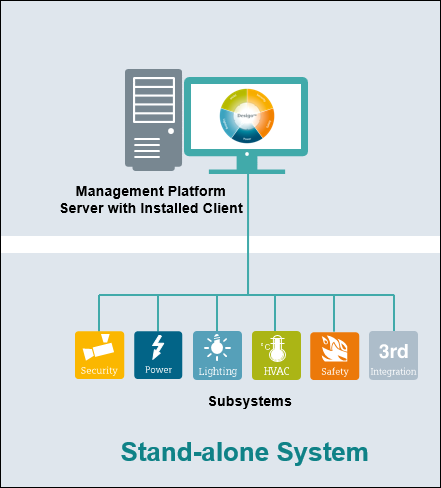

Stand-Alone System
This is the configuration choice in all cases where the system size is limited.
In this scenario, the Desigo CC Server and database server (MS SQL Server) are deployed on the same hardware platform, which can be physical or virtual. The field networks are connected directly to the Desigo CC Server.
By launching the Installed client on the same system you can work with the Server project.

This is a simple setup where no IT firewalls need to be opened for communication. A stand-alone system is secure in regards to attacks from the outside. However, installation guidelines for closing outside communication by firewall settings, virus scanner, and backup must be followed to secure the system.
Stand-Alone System with a Local Web Server (IIS)
The Desigo CC Server, history database server (MS SQL Server) and the web server (IIS) all are deployed on the same hardware platform, which can be physical or virtual. Field networks are connected directly to the Desigo CC Server.
When the web server (IIS) is installed on the same computer as the Desigo CC Server, it is called the local web server (IIS).
You can launch Windows App Client to work with the Server project.
The communication between the Desigo CC Server and the local web server (IIS) can be set to Local (without certificates) as they both are hosted on the same stand-alone computer. The communication between the web server (IIS) and Windows App client is always secured (using the web application certificate).
A stand-alone system with a local web server must be protected against attacks from other machines in the network. Follow the configuration guidelines to limit outside communication by firewall settings, virus scanner, and so forth to secure the system.